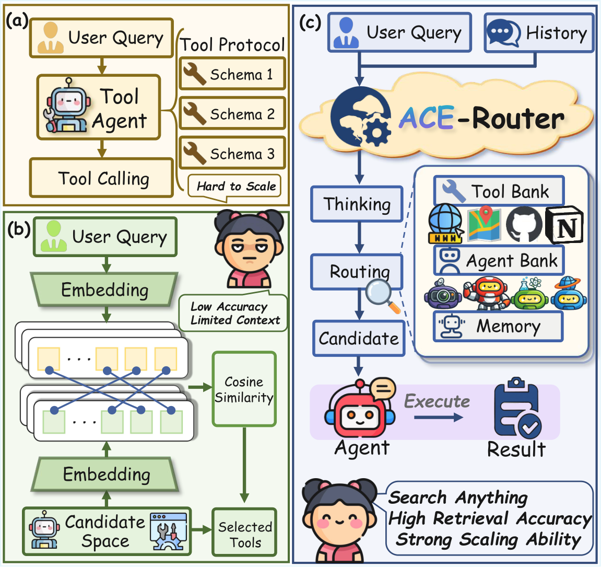
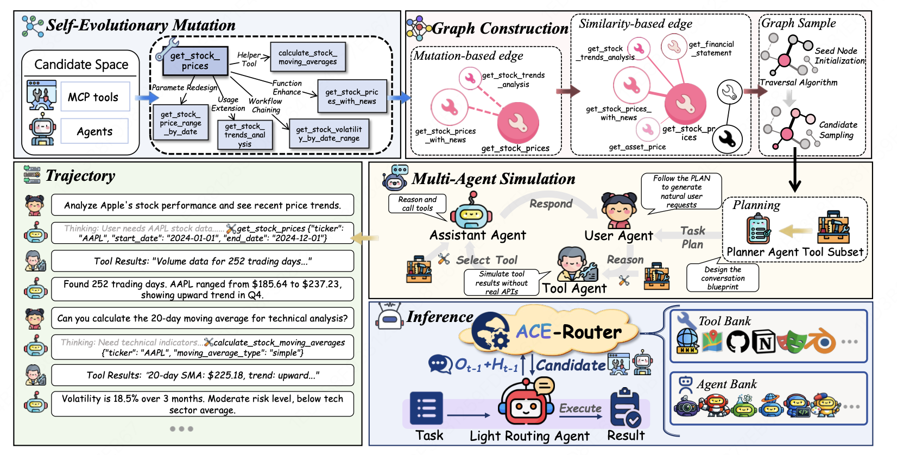

Generalizing History-Aware Routing from MCP Tools to the Agent Web
With the rise of the Agent Web and Model Context Protocol (MCP), the agent ecosystem is evolving into an open collaborative network, exponentially increasing accessible tools. However, current architectures face severe scalability and generality bottlenecks. To address this, we propose ACE-Router, a pipeline for training history-aware routers to empower precise navigation in large-scale ecosystems. By leveraging a dependency-rich candidate Graph to synthesize multi-turn trajectories, we effectively train routers with dynamic context understanding to create the plug-and-play Light Routing Agent. Experiments on the real-world benchmarks MCP-Universe and MCP-Mark demonstrate superior performance. Notably, ACE-Router exhibits critical properties for the future Agent Web: it not only generalizes to multi-agent collaboration with minimal adaptation but also maintains exceptional robustness against noise and scales effectively to massive candidate spaces. These findings provide a strong empirical foundation for universal orchestration in open-ended ecosystems.
Existing routing approaches face fundamental limitations in the Agent Web era. (a) Tool Agents rely on schema-based calling, which becomes hard to scale as the tool space grows. (b) Embedding-based retrieval offers scalability but suffers from low accuracy and limited context understanding. (c) ACE-Router introduces a history-aware routing paradigm that combines thinking and candidate selection with memory, achieving high retrieval accuracy and strong scaling ability.

Figure 1. Comparison of routing paradigms.
ACE-Router consists of three stages: (1) Self-Evolutionary Mutation expands the candidate space and constructs a dependency-rich graph via similarity-based edges. (2) Multi-Agent Simulation generates multi-turn interaction trajectories on the graph to produce history-aware training data. (3) Light Routing Agent uses the trained router for real-time inference — given a task and interaction history, it selects the optimal candidate from a large-scale pool with minimal overhead.

Figure 2. Overview of the ACE-Router pipeline.
If you find ACE-Router useful, please consider citing:
@misc{acerouter2026,
title={ACE-Router: Generalizing History-Aware Routing from MCP Tools to the Agent Web},
author={Zhiyuan Yao and Zishan Xu and Yifu Guo and Zhiguang Han and Cheng Yang and
Shuo Zhang and Weinan Zhang and Xingshan Zeng and Weiwen Liu},
year={2026},
eprint={2601.08276},
archivePrefix={arXiv},
}